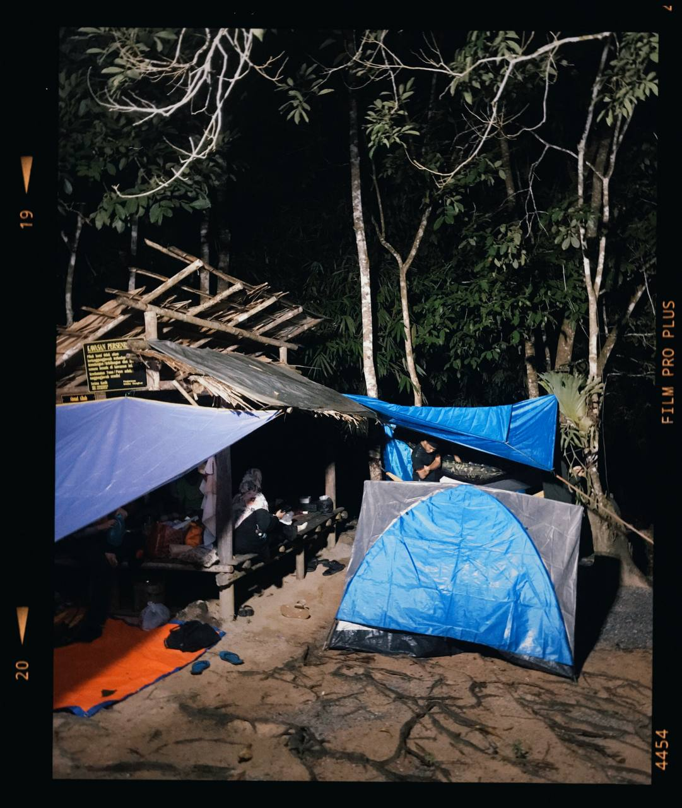
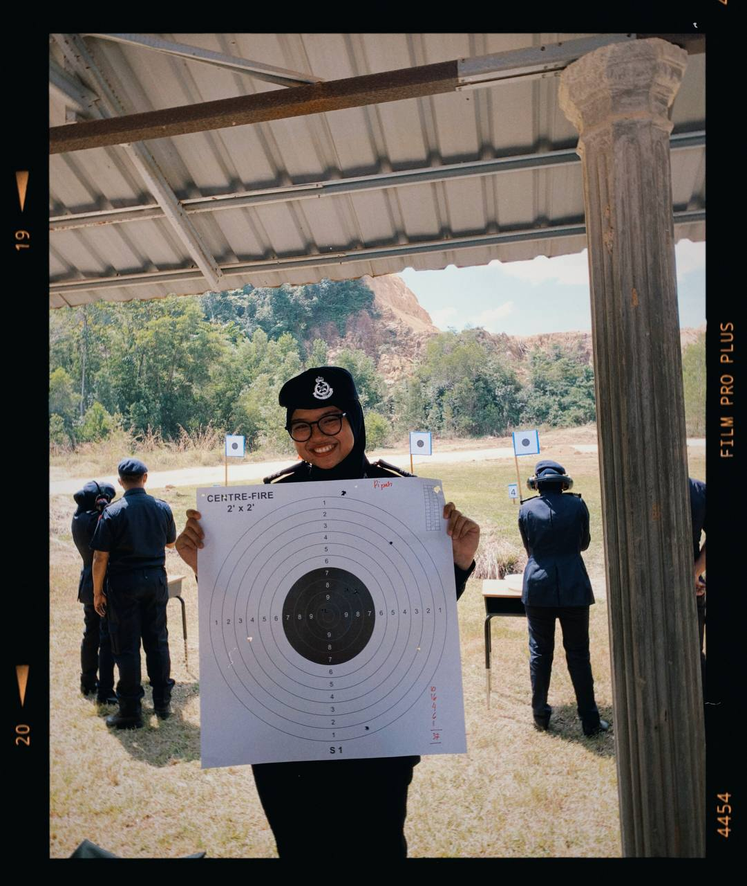
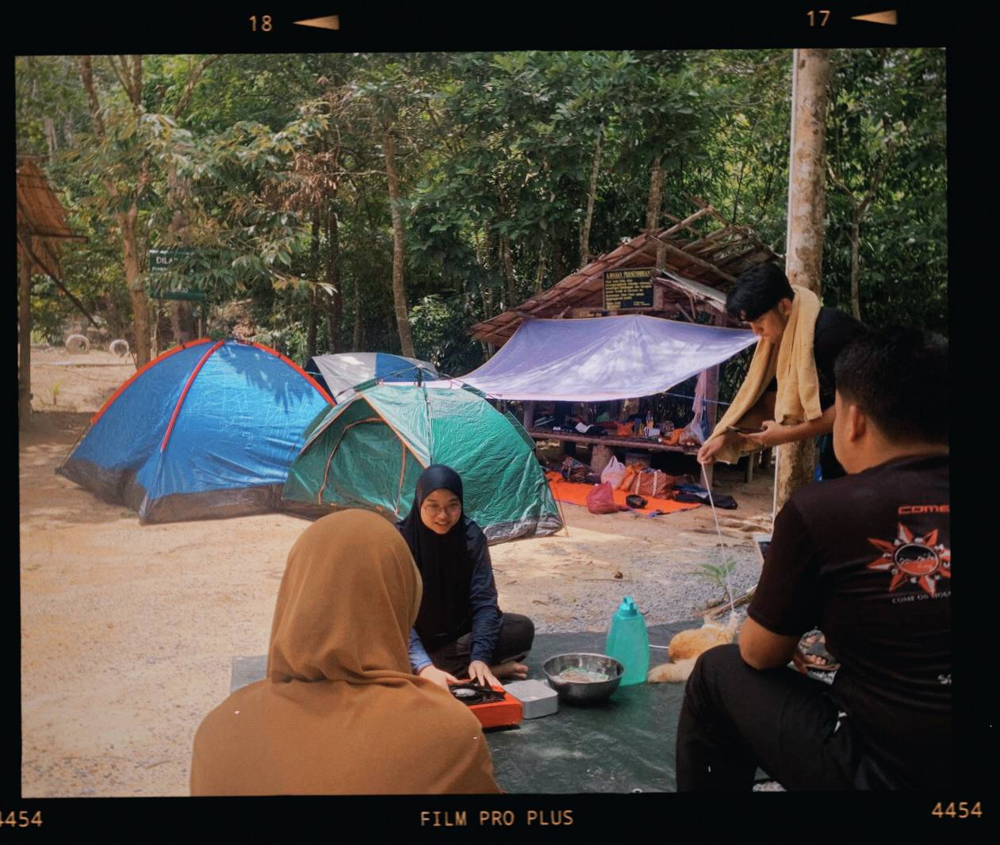
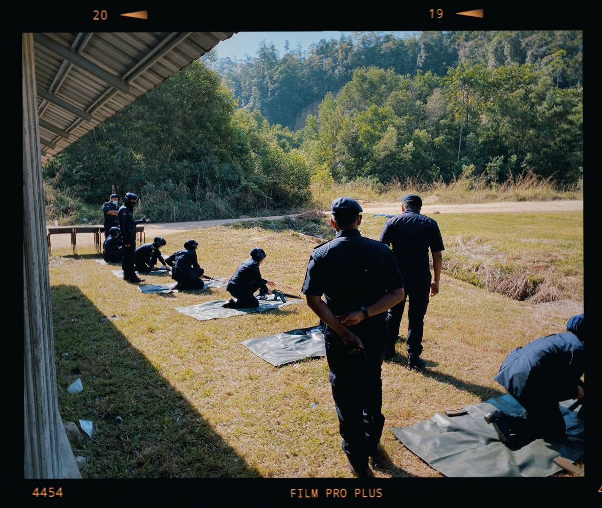
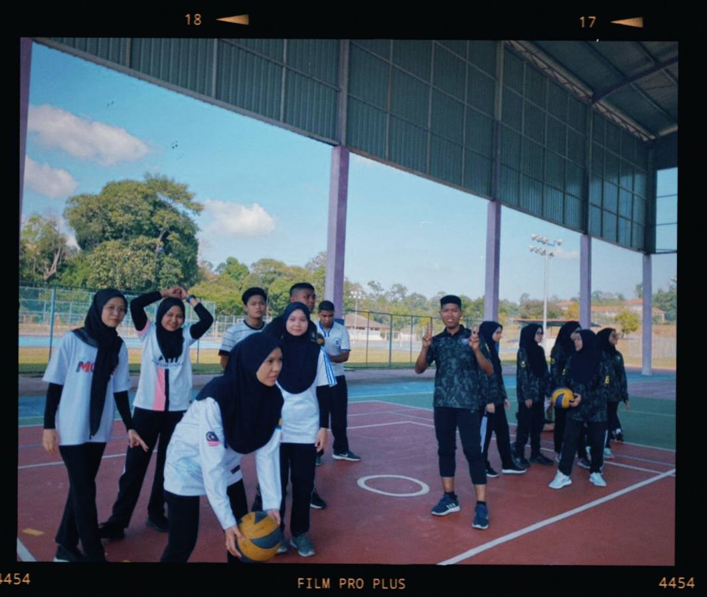
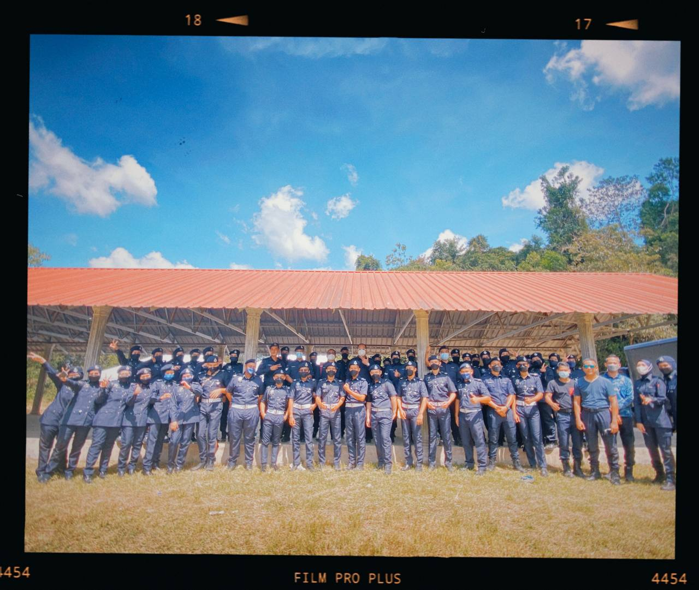
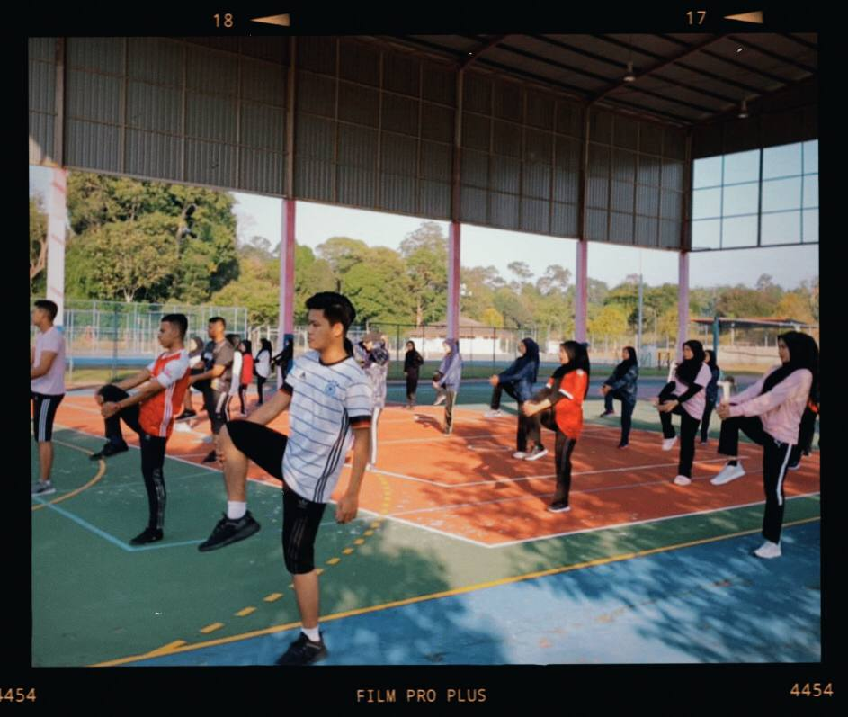

In my university, I intend to register one of the uniform units, which is SUKSIS. I have undergone various stages of the test to be selected with this Kor Sukarelawan Polis Siswa Siswi (SUKSIS). Among them are physical tests, interviews and so on. It turns out my choice to join SUKSIS is very accurate and appropriate to myself. What I want to say here, as long as my involvement in SUKSIS too many wonderful memories has been created and too many valuable experiences that can not be found anywhere or bought with millions of dollars. All the experiences I have gained in SUKSIS are useful and useful especially to me.
SUKSIS SQUAD








|